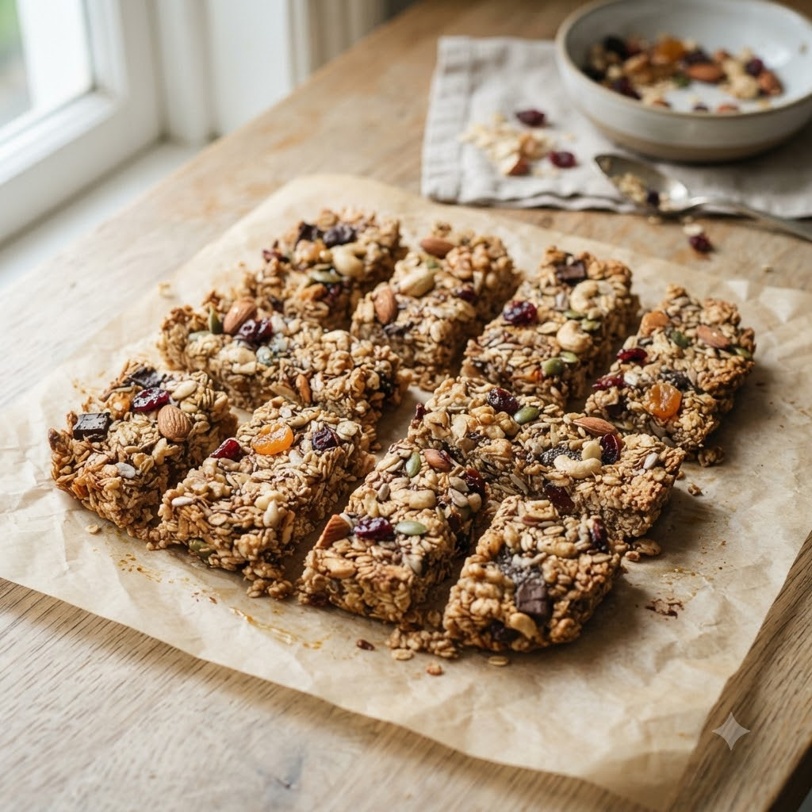

Granola Bars

Granola Bars
Airfryer – Bake 150°C 16 min makes 8 bars
Ingredients
- 1.5 cups rolled oats
- 1/3 cup honey or maple syrup
- 1/4 cup peanut butter
- 1/4 cup mixed nuts & seeds, chopped
- 1/4 cup dried fruit, chopped
- Pinch of salt
Method
1Preheat: Preheat the Airfryer to 150°C for 4 minutes before adding the food to the basket.
2Warm honey and peanut butter together until runny; mix with oats, nuts, seeds, dried fruit and salt.
3Press firmly into a small greased pan that fits the basket.
4Bake at 150°C for 16 minutes until edges turn golden.
5Cool completely in the pan before slicing into bars — this helps them hold together.